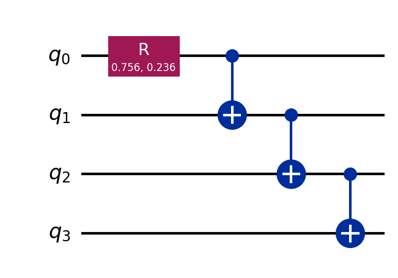
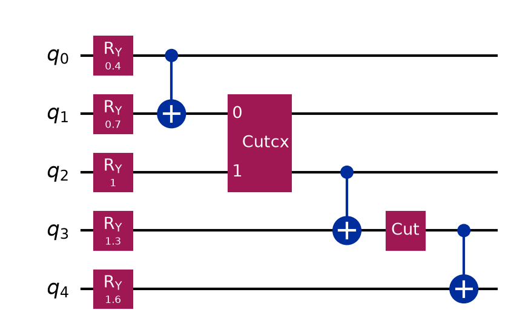
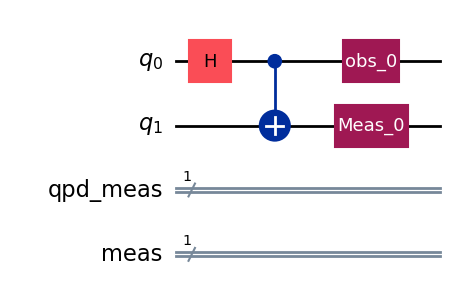
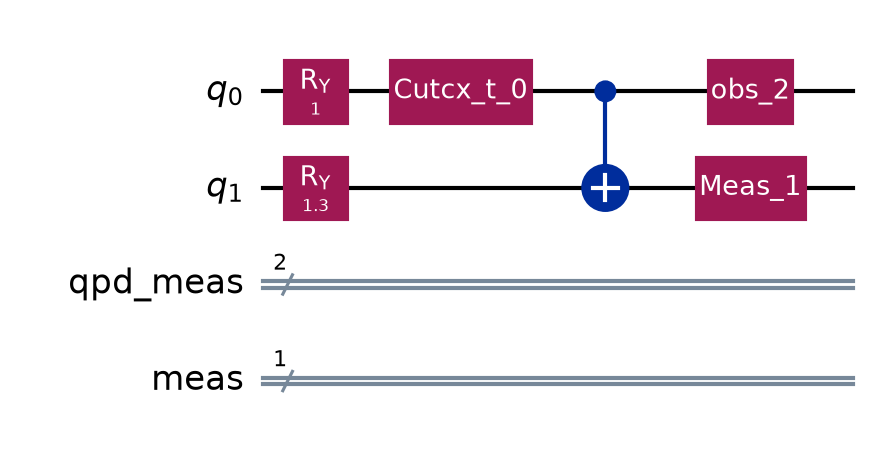
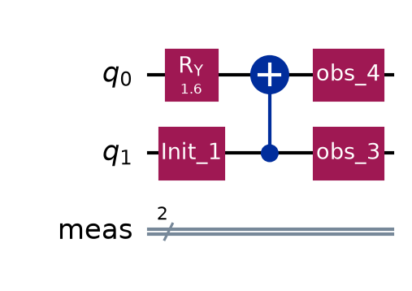

Usage#
QCut is a quantum circuit knitting package for performing wire cuts especially designed to not use reset gates or mid-circuit since on early NISQ devices they pose significant errors, if they are even available.
QCut has been designed to work with IQM’s qpus, and therefore on the Finnish Quantum Computing Infrastructure (FiQCI), and tested with an IQM Adonis 5-qubit qpu. Additionally, QCut is built to be combatible with IQM’s Qiskit fork iqm_qiskit.
QCut was built as a part of a summer internship at CSC - IT Center for Science (Finnish IT Center for Science).
Installation#
For installation a UNIX-like system is currently needed due to pymetis being used for automatic cut finding. On Windows use WSL
uvuv pip install QCut
#or
uv add QCut
If using other than the default Qiskit version (newest) it is recommended to install Qiskit first before installing QCut.
Using uv is the recommended install method.
Basic usage#
1: Import needed packages
import QCut as ck
from QCut import cut, cutGate
from qiskit import QuantumCircuit, transpile
from qiskit.circuit.library import CXGate
from qiskit.quantum_info import SparsePauliOp
from qiskit.circuit.library import CXGate
from qiskit_aer import AerSimulator
from qiskit.primitives import StatevectorEstimator, BackendEstimatorV2 as BackendEstimator
from iqm.qiskit_iqm import IQMFakeAdonis
2: Start by defining a QuantumCircuit just like in Qiskit
circuit = QuantumCircuit(4)
mult = 1.635
circuit.r(mult*0.46262, mult*0.1446, 0)
circuit.cx(0,1)
circuit.cx(1,2)
circuit.cx(2,3)
circuit.draw("mpl")

3: Insert cuts to the circuit to denote where we want to cut the circuit
Note that here we don’t insert any measurements. Measurements will be automatically handled by QCut.
from qiskit.circuit.library import CXGate
cut_circuit = QuantumCircuit(4)
mult = 1.635
cut_circuit.r(mult*0.46262, mult*0.1446, 0)
cut_circuit.append(**cutGate(CXGate(), 0, 1))
cut_circuit.append(cut(), [1])
cut_circuit.cx(1,2)
cut_circuit.cx(2,3)
cut_circuit.draw("mpl")

Note that currently QCut only supports cutting Cz gates so transformation have to be done manually for the time being (hence the added H gates)
4. Extract cut locations from cut_circuit and split it into independent subcircuit.
cut_circuit = ck.get_locations_and_subcircuits(cut_circuit)
Now we can draw our subcircuits.
cut_circuit.subcircuits[0].draw("mpl")

cut_circuit.subcircuits[1].draw("mpl")

cut_circuit.subcircuits[2].draw("mpl")

5 Define backend and transpile the cut circuit
fake = IQMFakeAdonis() #noisy
sim = AerSimulator() #ideal
transpiled = ck.transpile_subcircuits(cut_circuit, fake, optimization_level=3)
6: Generate experiment circuits
observables = SparsePauliOp(["IIIZ", "IIZI", "IZII", "IIZZ"])
cut_experiment = ck.get_experiment_circuits(transpiled, observables)
7: Run the experiment circuits
results = ck.run_experiments(cut_experiment, backend=fake)
8. Define observables and calculate expectation values
Observables are Pauli-Z observables and are defined as a list of qubit indices. Multi-qubit observables are defined as a list inside the observable list.
If one wishes to calculate other than Pauli-Z observable expectation values currently this needs to be done by manually modifying the initial circuit to perform the basis transform.
observables = [0,1,2, [0,1]]
expectation_values = ck.estimate_expectation_values(results, cut_experiment.expv_data())
9: Finally calculate the exact expectation values and compare them to the results calculated with QCut
obs = [ob.to_label() for ob in observables.paulis]
estimator = Estimator()
exact_expvals = [e.data.evs for e in
estimator.run([(x) for x in zip([circuit] * len(obs), obs)]).result()
]
tr = transpile(circuit, backend=fake)
tr_obs = observables.apply_layout(tr.layout)
tr_obs_separate = [
SparsePauliOp(pauli.to_label()) for pauli in tr_obs.paulis
]
fake_estimator = BackendEstimator(backend=fake)
exps = [e.data.evs for e in
fake_estimator.run([(x) for x in zip([tr] * len(tr_obs_separate), tr_obs_separate)]).result()
]
import numpy as np
np.set_printoptions(formatter={"float": lambda x: f"{x:0.6f}"})
print(f"QCut expectation values:{np.array(expectation_values)}")
print(f"Noisy expectation values with fake backend:{np.array(exps)}")
print(f"Exact expectation values with ideal simulator :{np.array(exact_expvals)}")
QCut expectation values:[0.704039 0.615275 0.554269 0.808868]
Noisy expectation values with fake backend:[0.587891 0.669922 0.500000 0.777344]
Exact expectation values with ideal simulator :[0.727323 0.727323 0.727323 1.000000]
As we can see QCut is able to accurately reconstruct the expectation values and be more accurate that just using the fake backend as is. (Note that since this is a probabilistic method the results vary a bit each run)
Additionally we can execute QCut using the ideal Aer simulator and see that we get (practically) exact results:
QCut expectation values:[0.699436 0.713172 0.713172 0.979377]
Click here to download example notebook.
Basic usage shorthand#
For convenience, it is not necessary to go through each of the
aforementioned steps individually. Instead, QCut provides a function
run() that executes the whole wire-cutting sequence.
The same example can then be run like this:
sim = AerSimulator()
observables = SparsePauliOp(["IIIZ", "IIZI", "IZII", "IIZZ"])
estimated_expectation_values = ck.run(cut_circuit, observables, sim)
Automatic cuts#
QCut comes with functionality for automatically finding good cut locations that can place both wire and gate cuts.
from QCut import find_cuts
cut_circuit = find_cuts(circuit , 3, cuts="both")
estimated_expectation_values = ck.run_cut_circuit(cut_circuit, observables, sim)
np.set_printoptions(formatter={"float": lambda x: f"{x:0.6f}"})
print(f"QCut expectation values:{np.array(estimated_expectation_values)}")
print(f"Exact expectation values with ideal simulator :{np.array(exact_expvals)}")
QCut expectation values:[0.729648 0.745609 0.702871 0.992620]
Exact expectation values with ideal simulator :[0.727323 0.727323 0.727323 1.000000]
Running on IQM fake backends#
To use QCut with IQM’s fake backends it is required to install Qiskit IQM for Qiskit <= 1.2 or IQM client for Qiskit > 1.2.
Installation can be done via uv:
uv pip install qiskit-iqm==17.8
uv pip install iqm-client[qiskit]
After installation just import the backend you want to use:
from iqm.qiskit_iqm import IQMFakeAdonis()
backend = IQMFakeAdonis()
To tranpile experiment circuits to the backend one can either manually call qiskit
transpile in a loop or use QCut’s transpile_experiments() function:
transpiled_experiments = ck.transpile_experiments(experiment_circuits, backend)
Now one can proceed like before.
Running on FiQCI#
For running on real hardware through the Lumi supercomputer’s FiQCI partition follow the instructions here. If you are used to using Qiskit on jupyter notebooks it is recommended to use the Lumi web interface.
Running on other hardware#
Running on other providers such as IBM is untested at the moment but as long as the hardware can be accessed with Qiskit version < 1.0 the QCut should be compatible.